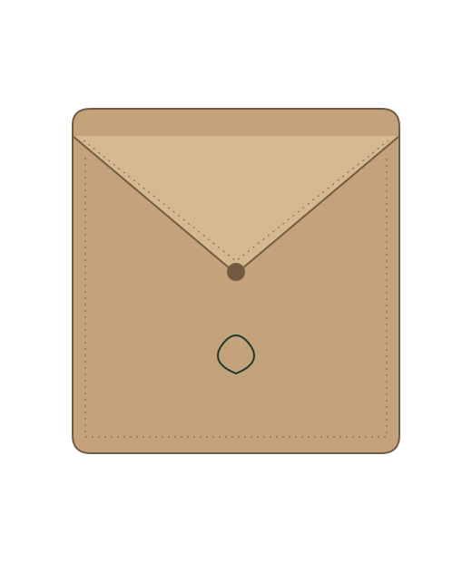
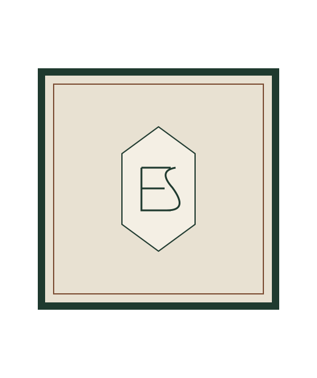
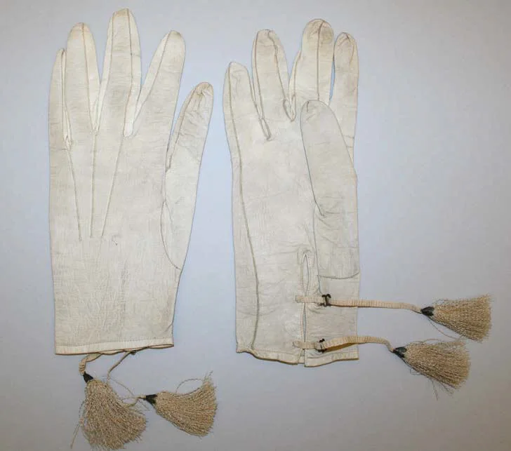

Folding case
A smooth surface, a clear seam and room for your initials.
Personalise the caseTwo pieces are made today; the third is an archive piece from about 1870.
View the collection
Prices and stock are not shown.
A smooth surface, a clear seam and room for your initials.
Personalise the case
Repeating lines with a small mark at their centre.
Care notes
Historic leather gloves from around 1870. Not for sale.
Open the chronicle ↗Choose the letters, the thread and where the mark sits.
Illustration of the original case.
The colour shows the embroidery thread.
Wipe it with a dry, soft cloth. Keep it away from soaking and direct heat. This is not advice for historic pieces.
Keep it dry and out of direct sun. Follow the care label on the product.
Yes. Change the initials, colour or place and prepare the summary again.